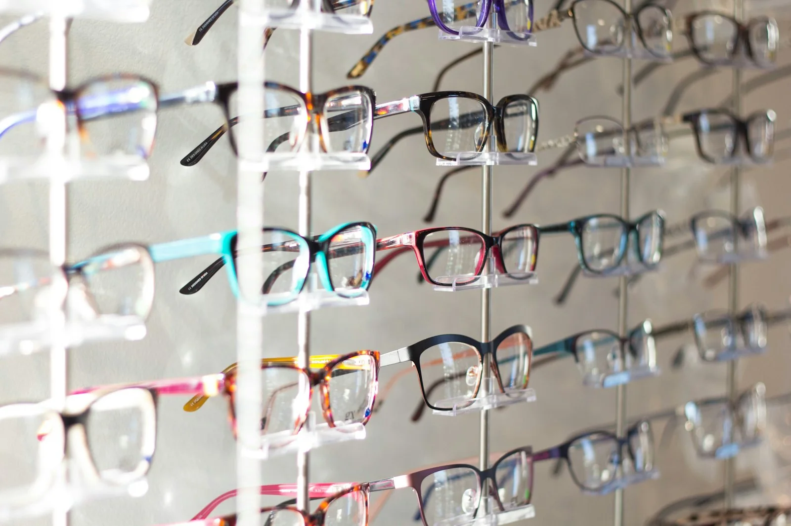
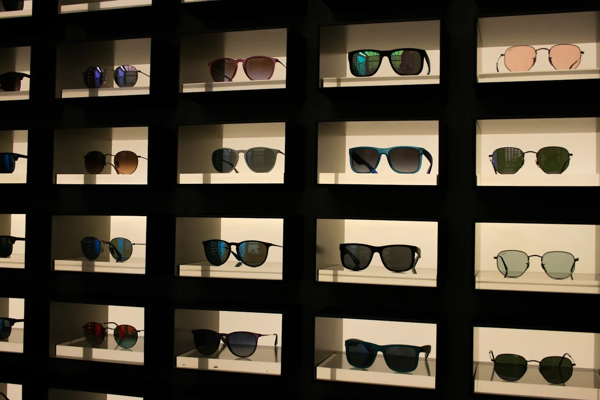

Feine Linie
Zurückhaltend, leicht und auf das Gesicht abgestimmt.
Optik · Beratung · Anpassung
Eine präzise, visuelle Vorlage für Optiker, die Beratung und Handwerk vor beliebige Markenlogos stellen.

Sehen beginnt mit Zuhören.Keine erfundenen Marken: Die Demo arbeitet mit Stilrichtungen. Im echten Projekt werden nur tatsächlich geführte Kollektionen ergänzt.
Zurückhaltend, leicht und auf das Gesicht abgestimmt.
Weiche Form mit klarer Präsenz.
Kräftige Kontur für einen bewussten Look.
Gläser und Schutz werden mit dem Betrieb konkret benannt.
Farbe dort, wo sie Persönlichkeit unterstützt.
Nur zeigen, wenn entsprechende Fassungen angeboten werden.
Interaktive Vorschau
Der kleine Fokus-Regler macht die Funktion der Seite spürbar. Er ersetzt keinen Sehtest und macht ausdrücklich keine medizinische Aussage.
Demo-Interaktion · keine Diagnose
Die Leistungstexte bleiben bewusst sachlich. Medizinische Leistungen und Messverfahren werden erst nach Bestätigung durch den Optikbetrieb beschrieben.
Termin, Umfang und Voraussetzungen konkret erklären.
Gesichtsform, Alltag und persönlicher Ausdruck zusammenbringen.
Sitz und Tragegefühl sorgfältig kontrollieren.
Reparaturen und Pflege nur im tatsächlich angebotenen Umfang.
Die richtige Beratung
Die Vorlage erklärt die persönliche Beratung als Prozess und verhindert, dass eine Brille wie ein beliebiges Produkt wirkt.
Alltag verstehen
Arbeit, Freizeit und Tragegewohnheiten besprechen.
Form finden
Fassungen in Ruhe vergleichen.
Sauber anpassen
Sitz und Komfort gemeinsam prüfen.
Beratungstermin
Der Betrieb bestätigt den Termin persönlich. So verspricht die Demo keine Verfügbarkeit, die noch nicht an ein echtes Kalendersystem angebunden ist.
Formular-Demo ohne Versand. Vor Livegang E-Mail, Datenschutz und Öffnungszeiten ergänzen.Gute Beratung beginnt beim Alltag. Diese Sektion macht Bedürfnisse sichtbar, ohne bestimmte Gläser, Marken oder medizinische Lösungen pauschal zu versprechen.
Sehentfernung, Arbeitsplatz und tägliche Tragedauer gemeinsam besprechen.
Sitz, Robustheit und Alltagstauglichkeit auf reale Situationen abstimmen.
Nur bestätigte Eigenschaften und tatsächlich geführte Lösungen erklären.
Farbe, Form und Proportion in Ruhe vergleichen – ohne Trendzwang.
Kurz erklärt
Praktische Antworten machen die Beratung planbarer und trennen Service klar von medizinischen Versprechen.
Die tatsächliche Dauer hängt vom Anliegen und vom Betrieb ab. Sie wird bei der Terminbestätigung konkret genannt.
Bestehende Brillen, frühere Angaben und konkrete Alltagssituationen können helfen, den Bedarf besser zu verstehen.
Nein. Er ist ausschliesslich eine gestalterische Demo und ersetzt weder Messung, Beratung noch medizinische Abklärung.
Art, Aufwand, Ersatzteile und Termin werden zuerst geprüft. Die Seite verspricht keine Sofortreparatur ohne Bestätigung.
Nach dem Sehtest
Gute Sicht entsteht nicht nur aus einem Messwert. Glas, Zentrierung und Sitz der Fassung müssen als System zusammenpassen.
Distanz, Nähe und typische Alltagssituationen werden gemeinsam geprüft.
Material und Veredelung richten sich nach Nutzung statt nach Produktstufe.
Die optische Mitte wird auf Fassung, Haltung und Blickverlauf abgestimmt.
Bügel, Nasenauflage und Neigung werden nach der Abholung nachjustiert.